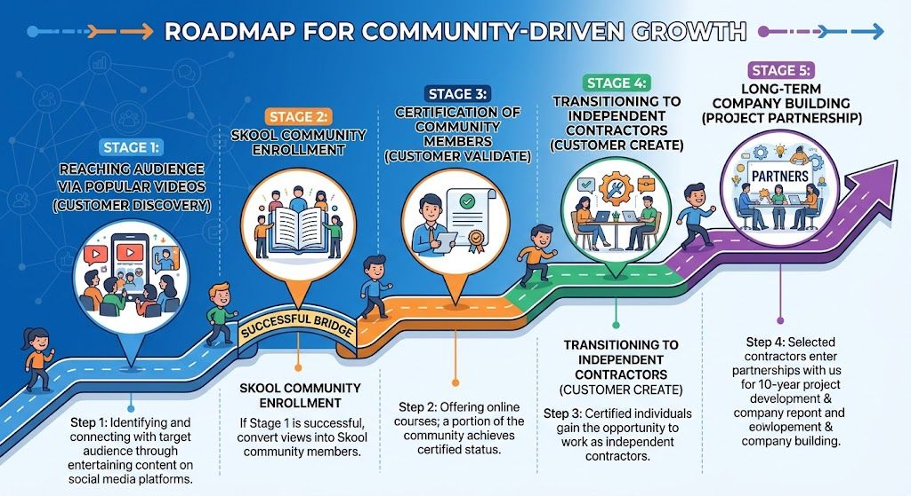

5 Aşamalı Gelişim Yolculuğu: Popüler videolarla kitleye ulaşma, Skool topluluk üyeliği, sertifikasyon, bağımsız yüklenicilik ve 10 yıllık ortak şirket inşası.

Geleneksel hantal danışmanlık modelleri yerine; yalın müşteri geliştirme (Lean Customer Development) prensipleriyle çalışan, topluluk odaklı sürekli bir büyüme çarkı işletiyoruz.
Adım adım, sosyal medya ve video platformlarında (YouTube, LinkedIn, TikTok vb.) ilgi çekici ve öğretici içeriklerle hedef kitlemize ulaşıyoruz. Gerçek AI ajan döngüleri, pratik canlı mimariler ve otonom dağıtım senaryolarıyla sektördeki kritik darboğazları aydınlatıyoruz.
İlk adım başarılı olduğunda (bu adım tutarsa), izleyicileri Skool Topluluğumuza üye yapıyoruz. Pasif içerik tüketicileri; paylaşılan ajan şablonlarına, haftalık canlı atölyelere ve akran etkileşimine erişerek aktif birer katılımcıya dönüşür.
Skool topluluğundaki adanmış kitle, kapsamlı eğitim programlarını tamamlayarak Sertifikalı Delivery Pilot unvanını alır. Bu sertifika ezbere dayalı değil; gerçek üretim simülasyonları ve ajan mimarileri geliştirilerek kazanılır.
Sertifika alan yeteneklerin bir kısmı Bağımsız Yüklenici (Independent Contractor) olarak sahaya adım atar. Kurumsal AI ajan projelerinde, optimizasyon süreçlerinde ve danışmanlık operasyonlarında doğrudan gelir üreten görevler alırlar.
En üst aşamada, sahada kendini kanıtlayan yüklenicilerle 10 yıllık ortak işlere girip projeler geliştiriyoruz. Özel SaaS ajanları, ortak fikri mülkiyetler ve kurumsal ortak girişimler (joint venture) inşa ederek kalıcı değer üretiyoruz.
Eğitim, topluluk aidiyeti, sertifikasyon ve ortak girişim vizyonunu bir araya getirerek geleneksel ajans ve danışmanlık tıkanıklıklarını aşıyoruz.
Öğretici ve nitelikli videolar sayesinde yüksek motivasyonlu mühendisler ve yöneticiler topluluğa organik olarak katılır.
Her yüklenici; topluluk katılımı, canlı kod sınavları ve akran denetiminden geçerek yetkinliğini kanıtlar.
Yükleniciler sadece saat satmaz; ortak şirket kurma, hisse sahibi olma ve ürün liderliği fırsatına sahiptir.
Tüm süreçler NATO/SC güvenlik prensipleri, tekrarlanabilir git depoları ve kurumsal AI standartlarıyla desteklenir.
İster temel becerileri öğrenin, ister sertifikalı Delivery Pilot olun, ister bizimle 10 yıllık şirketler inşa edin — ilk adım Skool topluluğumuzda başlıyor.